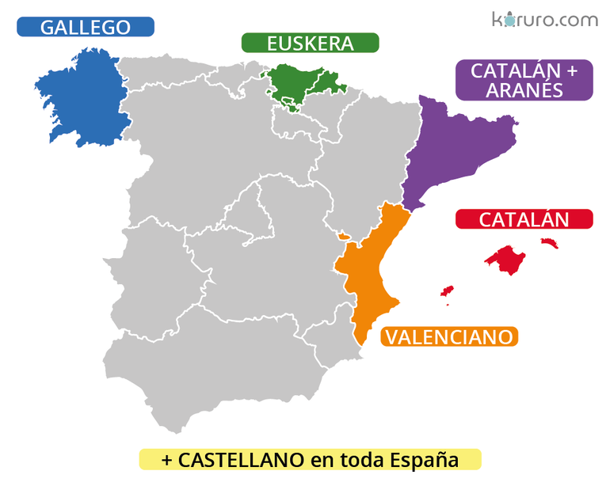

Comunidades Autónomas con más población y sus idiomas
- Andalucía
- Cataluña
- Comunidad de Madrid
- Comunidad Valenciana
- Galicia
Mis 5 frutas favoritas
- Manzana
- Plátano
- Fresa
- Naranja
- Piña
Tareas del día
- Estudiar HTML
- Hacer ejercicio
- Leer un libro
Más información sobre idiomas en España
Provincias y sus idiomas
Lenguas cooficiales
Lenguas cooficiales en España - Instituto Cervantes
Información sobre la lengua española
Mapa de provincias e idiomas
